libbingham Matlab Tutorial
Contents
What is a Bingham Distribution?
The Bingham distribution is an antipodally-symmetric probability distribution on a unit hypersphere. Its probability density function (PDF) is
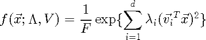
where  is a unit vector on the surface of the sphere 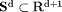, 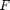 is a normalization constant, 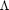 is a vector of non-positive (
is a unit vector on the surface of the sphere 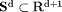, 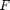 is a normalization constant, 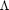 is a vector of non-positive ( ) concentration parameters, and the columns of the
) concentration parameters, and the columns of the  matrix
matrix  are orthogonal unit vectors.
are orthogonal unit vectors.
Note that a large-magnitude 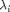 indicates that the distribution is highly peaked along the direction 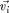, while a small-magnitude indicates that the distribution is spread out along .
The Bingham distribution is derived from a zero-mean Gaussian on  , conditioned to lie on the surface of the unit hypersphere
, conditioned to lie on the surface of the unit hypersphere  . Thus, the exponent of the Bingham PDF is the same as the exponent of a zero-mean Gaussian distribution (in principal components form, with one of the eigenvalues of the covariance matrix set to infinity).
. Thus, the exponent of the Bingham PDF is the same as the exponent of a zero-mean Gaussian distribution (in principal components form, with one of the eigenvalues of the covariance matrix set to infinity).
The Bingham distribution is the maximum entropy distribution on the hypersphere which matches the sample inertia matrix ![$E[\vec{x} \vec{x}^T]$](bingham_tutorial_eq32445.png) . Therefore, it may be better suited to representing random process noise on the hypersphere than some other distributions, such as (projected) tangent-space Gaussians. Binghams are also quite flexible, since a concentration parameter, , of zero indicates that the distribution is completely uniform in the direction of . They are therefore very useful in tracking problems where there is high, anisotropic noise.
. Therefore, it may be better suited to representing random process noise on the hypersphere than some other distributions, such as (projected) tangent-space Gaussians. Binghams are also quite flexible, since a concentration parameter, , of zero indicates that the distribution is completely uniform in the direction of . They are therefore very useful in tracking problems where there is high, anisotropic noise.
Matlab Support in libbingham
Starting with version 0.3.0, all of the core functions in libbingham are supported in Matlab. But, as in the C library, most functions only support Bingham distributions up to dimension 4. (That is, up to 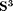.)
Creating a Bingham Distribution in Matlab
Bingham distributions are represented as a Matlab struct, with fields d, V, Z, and F and dF (which are computed by libbingham). To create a new Bingham distribution, create a new struct with dimension d, orthogonal direction matrix V, and concentration parameters Z. For example, the uniform Bingham distribution on the 3-D sphere 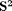 is:
B = struct(); B.d = 3; B.Z = [0,0]; B.V = [0,0; 1,0; 0,1];
To look up the normalization constant and its partial derivatives with respect to Z, use:
[B.F B.dF] = bingham_F(B.Z);
Fitting
Given a matrix X with unit vectors in the rows, you can compute the maximum likelihood Bingham distribution given X with bingham_fit(). For example:
% create n 4-D unit vectors n = 10; X = randn(n,4); X = X./repmat(sqrt(sum(X.^2,2)), [1,4]); % Fit a Bingham distribution to X B = bingham_fit(X);
Sampling
To sample n unit vectors from a Bingham distribution, use:
Y = bingham_sample(B,n);
Computing the PDF
To compute the PDF of a unit vector x under a Bingham B, use:
f = bingham_pdf(x,B);
Computing the Mode
mu = bingham_mode(B);
Computing the Entropy
h = bingham_entropy(B);
Computing the Scatter Matrix
To compute the scatter matrix, , use:
S = bingham_scatter(B);
Multiplying two Binghams
Two multiply two Binghams, B1 and B2, use:
B = bingham_mult(B1,B2);
Special Functions for the Quaternion Bingham Distribution
B2 = bingham_pre_rotate_3d(B,q); B2 = bingham_post_rotate_3d(q,B); B2 = bingham_invert_3d(B);